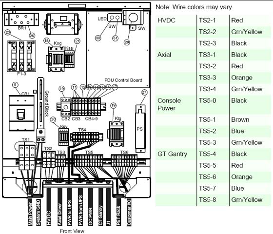
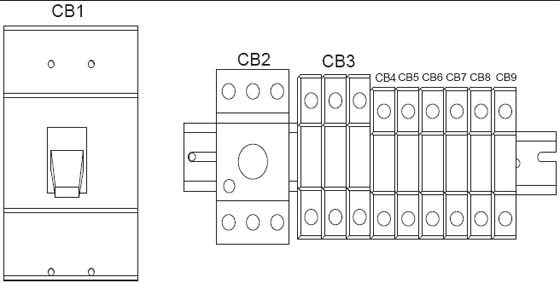
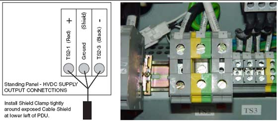
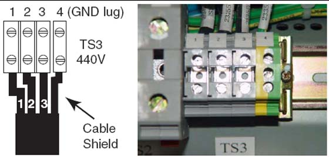
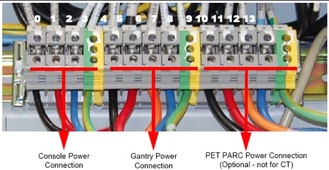

Operating Documentation
Direction 5193574-800, Rev# 22
LightSpeed 7.X Service Methods
Module Version 1.0, Version Date 4/22/10
Operating Documentation |
| ||||
| Do not work in an energized PDU. When working on the PDU, follow this simple rule: Always tag and lock out power to the PDU at the main disconnect. Failure to due so can result in electrocution or death. | ||||
| Do not apply power to the PDU until all work has been completed and all PDU covers are in their proper place. | ||||
As seen in Illustration 1, a number of cables must be installed throughout the PDU. Specific details on each connection can be found in the sub-sections that follow. Use Illustration 1 for reference. The PDU has been designed to have cables routed into the PDU from behind and/or beneath it.
Illustration 1: PDU Cable Connections - Front

If present, remove the TS1 panel front cover.
Strip the wires to fit securely on the power block.
Observe incoming phases (L1, L2, and L3) and insert bare leads into power block.
Insert vault ground into PDU vault ground lug.
All connections on the PDU should be torqued per these tables:
Table 1: Power Wire Torque Values
| Wire Size AWG | Driver | Bolt/Hex |
| #18 - 16 | 1.67 ft-lb (2.3 N-m) | 6.25 (8.5 N-m) |
| #14 - 8 | 1.67 ft-lb (2.3 N-m) | 6.25 (8.5 N-m) |
| #6 - 4 | 3.0 ft-lb (4.1 N-m) | 12.5 (17 N-m) |
| #0 - 2/0 | 29 ft-lb (39.3 N-m) |
Table 2: Ground Buss Bar Torque Values
| Wire Size AWG | Driver | Bolt/Hex |
| #14 - 8 | 1.67 ft-lb (2.3 N-m) | 6.25 (8.5 N-m) |
| #6 - 4 | 3.0 ft-lb (4.1 N-m) | 12.5 (17 N-m) |
| #3 - 1 | 21 ft-lb (28.5 N-m) | |
| #0 - 2/0 | 29 ft-lb (39.3 N-m) |
Place the circuit breakers in the off/down position during installation, even with mains incoming power tagged and locked out. After you have completed work on the PDU, you may return the circuit breakers to the ON positions.
Illustration 2: Circuit Breaker Panel

By design, when CB3 is in the OFF position, circuit breakers 4, 5, 6, and 7 are switched OFF. CB3 is essentially in series with these breakers.
Table 3: Panel Circuit Breaker Descriptions
| Circuit Breaker | Description |
| CB3 | Fully Winding Protection (Master power of CB 4, 5, 6, and 7) |
| CB4 | CT Gantry Service Outlets |
| CB5 | CT Gantry rotating loads |
| CB6 | Table & CT Gantry Station Loads |
| CB7 | Operator Console |
| CB8 | PET Gantry |
| CB9 | NGPDU Control Power Supply |
| NOTE: | Refer to System Interconnect Cables. |
Connect the internally shielded HVDC cable to TS2 on the standing panel (See Illustration 1 for the location of the connector and Illustration 3 for details). Observe polarities and grounds. Do not cut or shorten cables unless you have all of the appropriate tools and crimper to re-terminate. If short cables are needed, have the PMI order the short cable set.
| ||||
| Excess cable length cannot be stored under or behind the PDU. If cables are to be stored in the cable tray, do not overfill. Consult the local electrician to determine the maximum fill rate for your area. | ||||
Illustration 3: HVDC Connection

| NOTE: | Refer to System Interconnect Cables. |
Connect the internally shielded HVDC cable to TS2 on the standing panel (See Illustration 1 for the location of the connector and Illustration 3 for details). Observe polarities and grounds. Do not cut or shorten cables unless you have all of the appropriate tools and crimper to re-terminate. If short cables are needed, have the PMI order the short cable set.
| ||||
| Excess cable length cannot be stored under or behind the PDU. If cables are to be stored in the cable tray, do not overfill. Consult the local electrician to determine the maximum fill rate for your area. | ||||
Illustration 4: 440VAC Connection

| NOTE: | Refer to System Interconnect Cables. |
Do not cut or shorten cables unless you have all of the appropriate tools and crimper to re-terminate. If short cables are needed, have the PMI order the short cable set.
| ||||
| Excess cable length cannot be stored under or behind the PDU. If cables are to be stored in the cable tray, do not overfill. Consult the local electrician to determine the maximum fill rate for your area. | ||||
Plug the gantry power cable wires into J4 and the Console power cable wires into J5 as shown in Illustration 5.
Illustration 5: Gantry & Console Power Connections

Power cable re-termination is not allowed. Short and long cables are available.
Carefully remove the power plug and record the color of the wires in Table 4. The terminals are labeled X, Y, W, and G on the plug.
Table 4: Console Power Cable Termination
| Terminal | X | Y | W | G |
| Description | Hot | Hot | Neutral | Ground |
| Color (may vary) | Black | Brown | White | Green |
| PDU Connections | TS5-0 | TS5-1 | TS5-2 | TS5-3 |
Illustration 6: Console Power Plug

| NOTE: | The console can only be powered from this connection. |
Table 5: Resistance Verification Points
| FROM PDU Plug | TO console Plug End |
CB1 -11 (J5 Phase X) | Phase X Hot |
N/G-Neutral TS5-2 | Phase Y Hot |
A3 Neutral Bus Bar (J5 -13 Phase W) | Phase W Neutral |
A3 Ground Bus Bar (J5 -22 Ground Green) | Ground (Green) Ground Green screw |
The PDU control cable comes pre-terminated and should not be re-terminated in the field. Excess cable length must be stored. Simply plug the cable into J1 on the A panel. Secure it by using the fasteners integrated into cable’s connector shell.